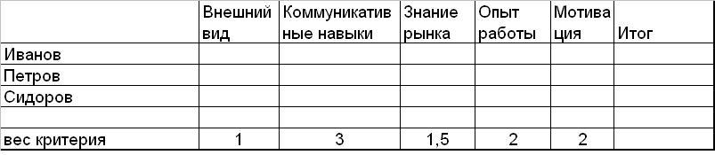
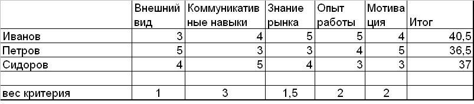

Приходилось ли вам оказываться в положении буриданова осла, когда и этот вариант хорош, и другой, и третий, и невозможно выбрать что-то одно? Если да, то эта рассылка будет вам полезна. Матрица принятия решения позволяет сделать выбор оптимального варианта среди множества равно привлекательных возможностей. Матрица проста в использовании, но при этом дает математически обоснованное решение.
Матрицу изобрел Стюарт Пью (Stuart Pugh), ее также называют методом Пью. В России она более известна как бально-весовая методика или метод оценки альтернатив. Чаще всего эта матрица используется для выбора технического решения или продукта. Она незаменима при выборе поставщика и отборе кандидата на вакантную должность. Но ее также можно использовать и для решения бытовых вопросов: где и что купить, куда поехать отдыхать. Сфера применения данной матрицы очень широка.
Давайте посмотрим на образец матрицы и разберем методику ее создания на следующем примере. Представьте, что вам надо взять одного человека на должность менеджера по продаже конфет в продовольственные магазины.
Примечание: Матрицу принятия решения удобнее всего составлять в программе Excel или аналогичной программе.
Первый шаг.
Составьте список возможных альтернатив, в данном случае кандидатов на должность.
Второй шаг.
Составьте список критериев, на основании которых вы будете отбирать наилучший вариант. Также определите вес каждого критерия. Вес критерия имеет ключевое значение для получения наилучшего результата. Начните с определения того, какой из критериев является самым важным и придайте ему максимальный вес. Затем решите, какой из критериев наименее важен и придайте ему минимальный вес, можно даже меньше единицы. Распределите вес остальных критериев между этими двумя цифрами.
Например, для продавца главное в работе – умение располагать к себе клиента, то есть коммуникативные навыки. Им мы придаем наибольший вес – 3. Внешний вид – вещь субъективная и поправимая, поэтому для нас это критерий с наименьшим весом 1. Опыт работы и мотивация важнее знания рынка, потому что мы можем легко поделиться знаниями рынка с новым сотрудником, но опыт нарабатывается только со временем, а желание работать в данной должности во многом зависит от базовых установок и характера человека.

Третий шаг.
Заполните таблицу, оценивая каждую из альтернатив по пятибалльной системе. Например, внешний вид Иванова мы оценили на 3, Петрова – на 5 и Сидорова – на 4. И так далее.
Четвертый шаг.
В графу «Итог» вбейте формулу для подсчета: суммируйте набранные каждой альтернативой оценки, умножая каждую оценку на вес критерия. Например, для Иванова формула подсчета выглядит следующим образом: 3х1+4х3+5х1,5+5х2+4х2=40,5

Пятый шаг.
Проанализируйте итоговые цифры, сравните их с вашими субъективными впечатлениями. Например, в нашем случае Иванов произвел наихудшее первое впечатление, его внешний вид был хуже, чем у остальных кандидатов. Но он прекрасно знает рынок, обладает большим опытом работы и хорошими коммуникативными навыками. Если бы мы не использовали матрицу принятия решения, мы, скорее всего, отвергли бы Иванова на основании своих первых субъективных ощущений и допустили бы большую ошибку, так как объективно он – самый сильный из трех кандидатов.
Основные преимущества данного способа принятия решения:
Мы минимизируем влияние субъективных факторов на наше решение, оно становится более объективным.
Математическая обоснованность нашего решения и наглядность этого обоснования помогают убедить других в правильности принятого нами решения.
Мы также точно знаем, что является вторым наилучшим вариантом и может прибегнуть к нему в случае сбоя с наилучшей альтернативой.
Давайте потренируемся:
Вы уже придумали, что будете делать в ближайшие выходные? Давайте применим научный анализ и выберем наилучший вариант вашего времяпрепровождения. Составьте список возможных мероприятий на выходные и список критериев их оценки. Внесите их в матрицу принятия решения и последовательно выполняйте все шаги работы с матрицей. Возможно, вы найдете наилучший способ провести выходные!
 Если вы устали «ломать голову» как отстроиться от конкурентов, эта статья для вас. Интеллект-карты — не панацея, при этом они здорово облегчают структурирование информации при создании УТП. Весь процесс занимает в среднем 30 минут. В статье вы увидите как и что делать на примерах физического товара и образовательной услуги.
Если вы устали «ломать голову» как отстроиться от конкурентов, эта статья для вас. Интеллект-карты — не панацея, при этом они здорово облегчают структурирование информации при создании УТП. Весь процесс занимает в среднем 30 минут. В статье вы увидите как и что делать на примерах физического товара и образовательной услуги.

{kind=link}